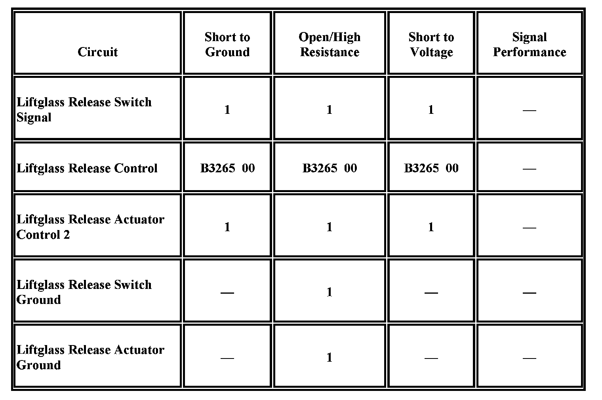

B3265
DTC B3265
Diagnostic Instructions
- Perform the Diagnostic System Check - Vehicle prior to using this diagnostic procedure Initial Inspection and Diagnostic Overview.
- Review Strategy Based Diagnosis for an overview of the diagnostic approach Initial Inspection and Diagnostic Overview.
- Diagnostic Procedure Instructions provides an overview of each diagnostic category Initial Inspection and Diagnostic Overview.
DTC Descriptor
DTC B3265 00: Trunk/Hatch/Liftgate Release Output Circuit
Diagnostic Fault Information

Circuit/System Description
The liftglass release switch is an input to the body control module (BCM). The BCM supplies battery voltage to the signal circuit and when the release switch is activated the signal circuit voltage goes low. The BCM controls the liftglass release actuator through the rear wiper motor control module. When the release switch signal is activated the BCM applies battery voltage as a signal through the liftglass latch release control circuit to the rear wiper motor control module. The rear wiper motor control module supplies voltage to the release actuator through the liftglass release actuator control 2 circuit.
Conditions for Running the DTC
- System voltage must be 9-16 volts.
- The liftglass release operation is attempted.
Conditions for Setting the DTC
The BCM detects a fault in the liftglass release signal circuit.
Action Taken When the DTC Sets
The BCM will disable the liftglass latch release control circuit output until the next ignition cycle.
Conditions for Clearing the DTC
- The DTC will be current only while the liftglass release request is active.
- The history DTC will be cleared after 50 fault-free ignition cycles.
Reference Information
Schematic Reference
Release Systems Schematics Electrical Diagrams
Connector End View Reference
Vehicle Access Connector End Views Connector Views
Electrical Information Reference
- Circuit Testing Component Tests and General Diagnostics
- Connector Repairs Component Tests and General Diagnostics
- Testing for Intermittent Conditions and Poor Connections Component Tests and General Diagnostics
- Wiring Repairs Component Tests and General Diagnostics
Scan Tool Reference
- Scan Tool Output Controls
- Scan Tool Data List
Circuit/System Verification
Ignition ON, command the liftglass latch to release the liftglass by pressing the liftgate window release switch. The liftglass latch should release the liftglass.
Circuit/System Testing
1. Ignition OFF, disconnect the harness connector at the rear window wiper motor.
2. Ignition ON, connect a test lamp between the signal circuit terminal B and ground.
3. Command the liftglass latch to release by pressing the liftgate window release switch. The test lamp should briefly illuminate when the liftgate window release switch is pressed.
-> If the test lamp is always OFF, test the signal circuit for a short to ground or an open/high resistance. If the circuit tests normal, replace the BCM.
-> If the test lamp is always ON, test the signal circuit for a short to voltage. If the circuit tests normal, replace the BCM.
4. If all circuits test normal, replace the rear window wiper motor.
Repair Instructions
Perform the Diagnostic Repair Verification after completing the diagnostic procedure.
- Rear Window Wiper Motor Replacement Service and Repair
- Control Module References for BCM replacement, setup, and programming Control Module References